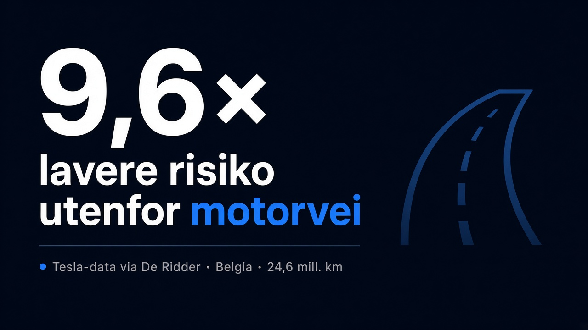
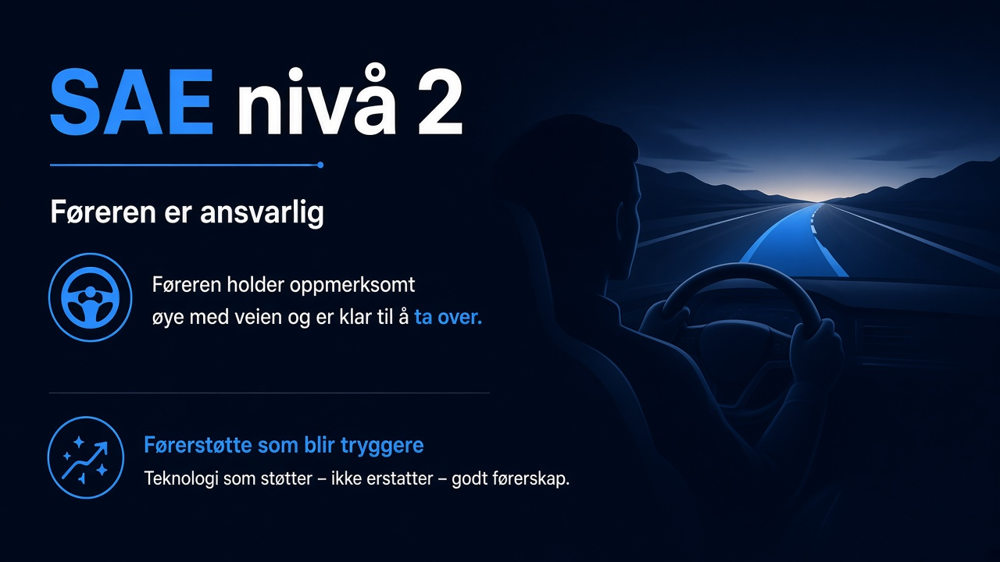
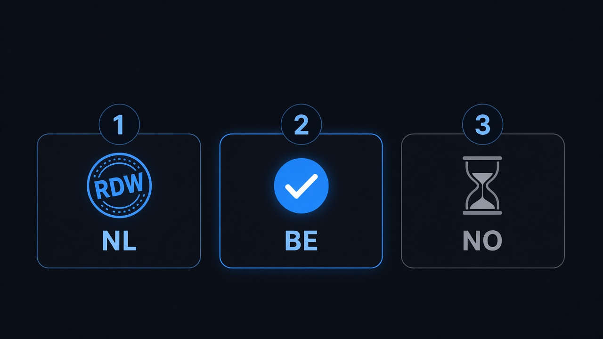

Belgia kjører FSD med tallene på bordet. Norge venter fortsatt.
I Belgia kan vanlige eiere skru på FSD Supervised. I Norge kan du ikke. Det er hele saken — og den blir bare mer pinlig jo flere kilometer Flandern legger bak seg.
Flamske mobilitetsminister Annick De Ridder gikk i september i parlamentet med Tesla-tall fra 11. juni til 31. august: 24,6 millioner kilometer med systemet på. Utenfor motorvei: 9,6 ganger færre ulykker enn når Tesla-eiere kjørte manuelt i samme periode. På motorvei: rundt 30 prosent bedre. Det er ikke en pressemelding fra Palo Alto alene — det er tall en regjeringsminister valgte å legge fram fordi de viser hva systemet gjør i virkelig trafikk.

Hva tallene faktisk sier
HLN bryter det ned mer: én kollisjon over 9,5 millioner kilometer med FSD utenfor motorvei, mot 150 kollisjoner over 146,9 millioner kilometer manuelt. Siden tillatelsen: én meldingspliktig ulykke — og da hadde føreren skrudd av FSD i en rundkjøring. Fire bagateller uten kobling til systemet, ifølge De Ridder.
Ja, det er SAE nivå 2. Du må følge med. Det er førerstøtte, ikke en sjåførfri taxi. Men retningen er klar: FSD Supervised kjører tryggere enn de fleste menneskelige sjåfører i det datasettet, og neste programvare — v15 og det som kommer etter — blir bare skarpere. Norge står på sidelinjen mens det skjer.

Belgia tok RDW-spor. Norge tok pause.
10. april ga nederlandske RDW typegodkjenning for FSD Supervised under artikkel 39 i EU-forordningen. 10. juni fulgte Flandern: aktivering på belgiske veier, bygget på nederlandsk testdata pluss en kortere egen sjekk. Føreren er fortsatt ansvarlig. Det er nasjonal anerkjennelse, ikke et ferdig EU-ja for alle 27 — men det er nok til at kunder faktisk kjører.
Statens vegvesen har ikke gjort det samme. Infosiden deres (sist tydelig oppdatert 3. juli 2026) er fortsatt nei for vanlige eiere. Begrenset testing med Tesla-sikkerhetsførere. Kundedemoer stanset til Tesla endrer budskapet. Kritikk av flere RDW-unntak — blant annet kjøring utenfor motorvei og unntak knyttet til fart og kurver. Neste TCMV-møte er i oktober; avstemning kan komme da. Datoen 6. oktober er rykte, ikke bekreftet agenda.
Norge har ikke stemmerett i TCMV. Det er EØS-realiteten. Det er også en dårlig unnskyldning for å late som systemet ikke allerede kjører noen timers flytur unna.

Forsinkelsen er problemet — ikke FSD
Speed Offset og andre detaljer i godkjenningsløpet er reelle diskusjoner. De er ikke et argument for at FSD Supervised er feil retning. Autopilot og FSD er separate Level 2-pakker; denne saken handler om FSD Supervised.
Før norske eiere får noe: TCMV må behandle RDW-saken, EU må lande et utfall, SVV må ta stilling for EØS, og Tesla Norge må aktivere. Et EU-ja er ikke «på» i bilen samme kveld. Men for hver måned uten godkjenning mister Norge også data, erfaring og tryggere kilometer på norske veier.
Kort sagt: Belgia har tallene. Norge har ventelisten. FSD Supervised er fremtiden — tryggere, enklere, og stadig bedre. Spørsmålet er hvor lenge norske myndigheter orker å holde igjen.
Se også norsk status, TCMV-estimat, Europa-nyhetsfeed og historie.